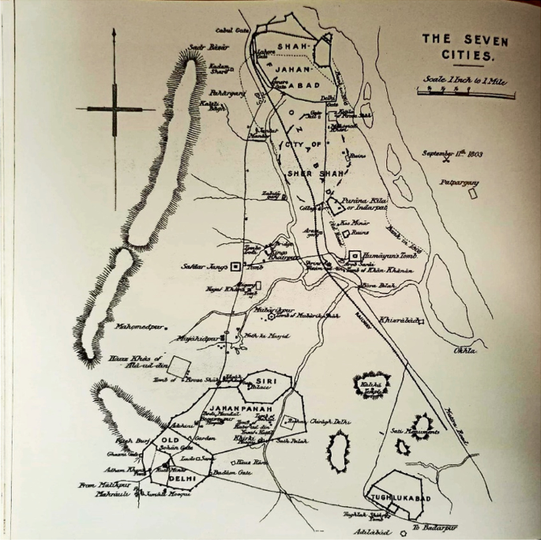

🕌 Siri Fort: The Lost Fortress of Alauddin Khilji
🕰️ A City of War and Stone
In the early 1300s, as Mongol invaders pressed at the gates of India, Alauddin Khilji envisioned a mighty fortress — a city built for war, carved in stone. That dream became Siri Fort. With seven gates and high red sandstone walls, it stood as a testament to resilience. Here, the Sultan’s generals trained, weapons clashed in drills, and the fear of invasion was turned into preparation. Today, only fragments remain, scattered in the heart of Delhi. But listen closely... the stones still whisper stories of valor and strategy.
📠Located in South Delhi — The ancient battlefield city of Siri Fort.
📜 Siri Fort Timeline
1296: Alauddin Khilji becomes Sultan of Delhi.
1303: Mongol invasion prompts construction of Siri Fort.
1304–1307: Siri Fort completed; city fortified with red sandstone walls.
14th century: Siri becomes military headquarters for campaigns.
Modern day: Remnants of Siri lie in Siri Fort Park, Delhi.
🯠Tughlaqabad: The Cursed Fort of Ghiyasuddin Tughlaq
South of Delhi’s ridges lies a sprawling fortress city, built in haste and ambition. Tughlaqabad was the vision of Ghiyasuddin Tughlaq — a city of power with thick walls, sloping bastions, and deep wells. But a curse loomed over it. The Sufi saint Nizamuddin Auliya, angered by the Sultan’s actions, declared: "Ya rahe ujjar, ya base Gujjar" — may it lie abandoned or be settled only by herders. And so it was. Today, the fort lies deserted — vast, echoing, and powerful, but silent. A city brought down by a holy man’s words.
📠Located in South Delhi — The haunted, walled city of Tughlaqabad built by Ghiyasuddin Tughlaq.
📜 Tughlaqabad Timeline
1320: Ghiyasuddin Tughlaq founds the Tughlaq dynasty.
1321: Construction of Tughlaqabad Fort begins.
1324: Fort is completed, but Ghiyasuddin dies mysteriously.
Post-1325: The fort is slowly abandoned, fulfilling the saint’s curse.
Today: Remains stand as a haunting reminder of Delhi’s medieval past.
🰠Jahanpanah: The Refuge of Kings
In the 14th century, Sultan Muhammad bin Tughlaq tried to unite the scattered cities of Delhi — Siri, Tughlaqabad, and Lal Kot — into one fortified capital. He called it Jahanpanah, meaning “Refuge of the World.†Massive walls rose, enclosing palaces, mosques, and markets. But the dream was short-lived. Tughlaq’s erratic rule and wild experiments — like shifting the capital to Daulatabad — weakened his grip. Yet for a brief time, Jahanpanah stood strong, a city meant to bind an empire together. Today, only parts of its fortifications remain — silent, but proud.

📠Located near Begumpur in South Delhi — The remnants of a city that once aimed to unite all of Delhi.
📜 Jahanpanah Timeline
1326: Muhammad bin Tughlaq becomes Sultan of Delhi.
1327–1328: Construction of Jahanpanah begins to link older cities.
1330: City nearly completed; includes palaces, mosques, and defenses.
1334: Tughlaq shifts capital to Daulatabad, weakening Jahanpanah's importance.
Modern day: Some fortifications and city forest remain in Delhi.
🌿 Mehrauli: Cradle of Delhi's Heritage
Mehrauli is one of the oldest inhabited regions of Delhi, tracing its history back to the Rajput Tomar dynasty and later the Slave Dynasty under Qutb-ud-din Aibak. It houses the iconic Qutb Minar complex, the tomb of Balban, and Sufi dargahs like that of Qutbuddin Bakhtiar Kaki. Mehrauli became a spiritual and architectural hub, continuing its legacy through the Delhi Sultanate, the Mughals, and even the British. The area today is rich with overlapping layers of ruins, gardens, and living traditions.
📠Exact Location: Mehrauli, South Delhi, near Qutb Minar Complex.
📜 Mehrauli Timeline
1060s: Tomar Rajputs build Lal Kot, early fort of Delhi.
1193: Qutb-ud-din Aibak establishes Mamluk rule; Qutb Minar construction starts.
1266: Balban becomes Sultan; buried in Mehrauli.
1320s: Tughlaqs build further south but Mehrauli remains vital.
Modern day: Hosts Qutb Complex, dargahs, and archaeological park.